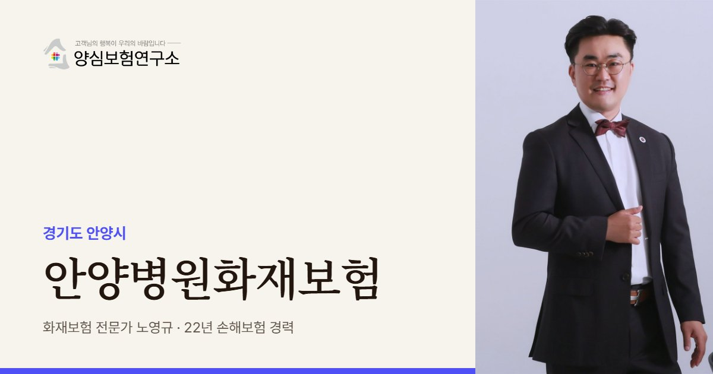

안양은 동안구와 만안구를 따로 봐야 합니다. 노영규 대표는 평촌 쪽이면 한 건물에 의원이 몇 곳 모였는지, 만안구 쪽이면 입원 환자가 몇 명이고 밤에 누가 지키는지부터 묻습니다.
안양 안내
안양, 왜 병원화재보험이 중요할까요?
안양병원화재보험이란 안양시 병의원이 화재로 잃을 수 있는 시설과 장비, 약품, 그리고 환자와 이웃에게 지게 될 배상책임을 미리 계산해 두는 보험을 가리킵니다. 같은 시 안에서도 평촌 신도시와 만안구 구도심은 의료 환경이 뚜렷하게 다릅니다.
의료 전문지의 동안구 입지 분석을 보면, 범계역 주변은 '안양의 강남'이라 불리며 평촌역 주변보다 의원이 네다섯 배 많이 모여 있습니다. 평촌역 쪽은 대학병원이 가까워 치과가 10곳으로 가장 많았습니다. 학원가에는 학생을 대상으로 한 치과 10여 곳과 소아청소년과가 자리 잡았습니다.
학원가 상가 건물은 아래층에 의원, 위층에 학원이 함께 있는 경우가 많습니다. 방과 후에는 계단과 승강기가 학생으로 붐비고, 불이 나면 의원 환자와 학원생이 한 통로로 대피해야 합니다. 관양동처럼 오래된 주거지에는 어르신 환자를 보는 내과·정형외과·비뇨의학과가 맞는다는 분석도 있었습니다.
만안구에는 입원 병상을 갖춘 병원이 있습니다. 2026년 1월 1일 새벽 만안구의 지하 2층, 지상 8층 병원 3층에서 불이 나 320명이 스스로 대피하고 입원 환자 220명이 지하층과 외부 강당으로 옮겨졌습니다. 인명 피해는 없었고 약 1시간 반 만에 완전히 꺼졌습니다.
2026.01 만안구 새해 첫날 새벽 병원 3층에서 연기가 나 소방관 130명이 출동했고, 입원 환자를 포함한 320명이 대피했습니다. 원인은 조사 중으로 보도됐습니다. (뉴스핌)
주요 위험
안양병원화재보험에서 먼저 볼 위험
학원생과 함께 쓰는 통로
위층 학원과 계단을 같이 쓰는 건물은 저녁 시간 대피가 몰려 부상 배상 위험이 커집니다.
치과 압축기와 산소
학원가에 많은 치과는 공기 압축기, 소독기, 산소 용기 위치가 화재 확산을 좌우합니다.
밤새 입원 환자가 있는 병원
만안구 입원 병원은 야간 근무자 수와 환자 이동 계획이 피해 규모를 가릅니다.
의원이 빽빽한 범계역 건물
한 층에 여러 의원이 붙어 있어 옆 호실 불이 벽을 넘어오기 쉽습니다.
소아 수액과 네뷸라이저
소아청소년과의 수액 걸이, 흡입 치료기, 전기 가습기는 겨울철 사용이 몰립니다.
승강기 의존이 큰 고령 환자
관양동처럼 어르신 환자가 많은 의원은 승강기가 멈추면 대피가 늦어집니다.
※ 실제 보장 여부와 한도, 면책 사항은 가입하는 상품의 약관과 병원 현황에 따라 달라집니다.
방문 상담
안양 직접 방문 상담
평촌 학원가와 범계역 의원, 만안구 병원을 찾아가 상담합니다. 건물에 학원이나 다른 의원이 몇 곳 있는지 함께 둘러봅니다.
꼭 확인할 점검 항목
안양병원화재보험 점검 리스트
- 위층 학원 운영 시간학생이 가장 많이 오가는 시간대와 우리 진료 시간이 겹치는지 적어 둡니다.
- 옆 호실 진료과벽을 맞댄 의원이 어떤 장비를 쓰는지 알아 두면 번짐 위험을 가늠할 수 있습니다.
- 입원 병상 수와 야간 인력병상 수와 밤 근무자 수를 알려 주시면 배상책임 한도를 맞추기 쉽습니다.
- 소아 진료 기기 목록흡입 치료기와 가습기 대수, 사용 계절을 정리해 둡니다.
- 건물 공용 부분 관리계단, 복도, 비상구를 누가 관리하는지 관리 규약을 확인합니다.
고객 후기
실제 계약고객 만족 사례


※ 실제 계약고객과 나눈 카카오톡 상담과 후기 일부이며, 개인정보는 가렸습니다.
지역 상담 Q&A
안양병원화재보험 Q&A
위층 학원에서 난 불로 우리 소아과가 피해를 보면 어떻게 되나요?
내 화재보험이 연기와 소화수 손해를 포함한다면 보상 대상이 될 수 있습니다. 학원 측 책임은 별도로 따지므로 피해 사진을 바로 남겨 두세요.
범계역 건물에서 옆 의원과 벽을 같이 쓰는데 따로 가입하나요?
의원마다 재산과 책임이 다르므로 각자 준비하는 것이 기본입니다. 우리 불이 옆 의원으로 번졌을 때를 대비해 배상책임도 함께 봅니다.
입원 환자가 있는 병원은 무엇이 달라지나요?
대피 중 환자 부상과 다른 병원 이송 비용 문제가 생길 수 있어 배상책임을 더 꼼꼼히 봐야 합니다. 병상 수와 층별 배치를 알려 주시면 그에 맞춰 설계합니다.
평촌 재건축 이야기가 나오는데 지금 가입해도 되나요?
재건축이 확정돼 이전하기 전까지는 지금 건물의 위험이 그대로 남아 있습니다. 이전 일정이 잡히면 그때 계약을 옮기거나 조정하면 됩니다.
평촌 학원가 건물의 병원,
위층 학원까지 생각하셨나요?
같은 건물의 학원과 의원, 입원 환자 수를 함께 보고 보험을 정리해 드립니다.